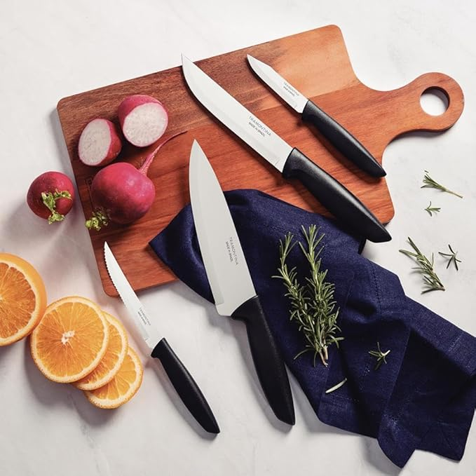
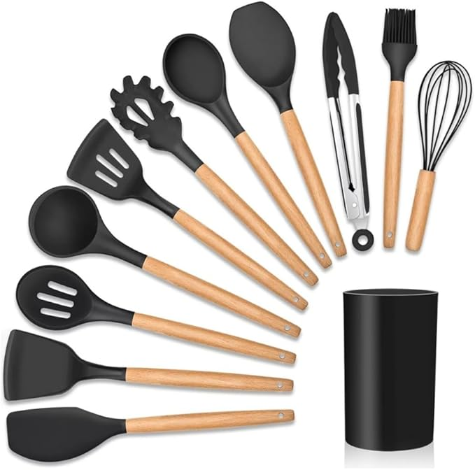
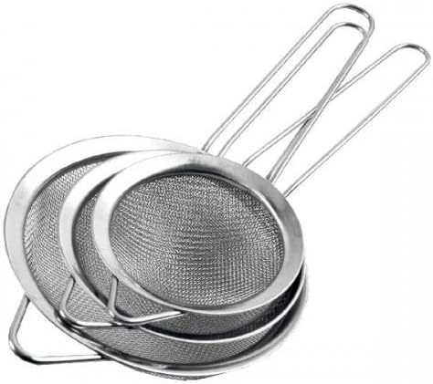
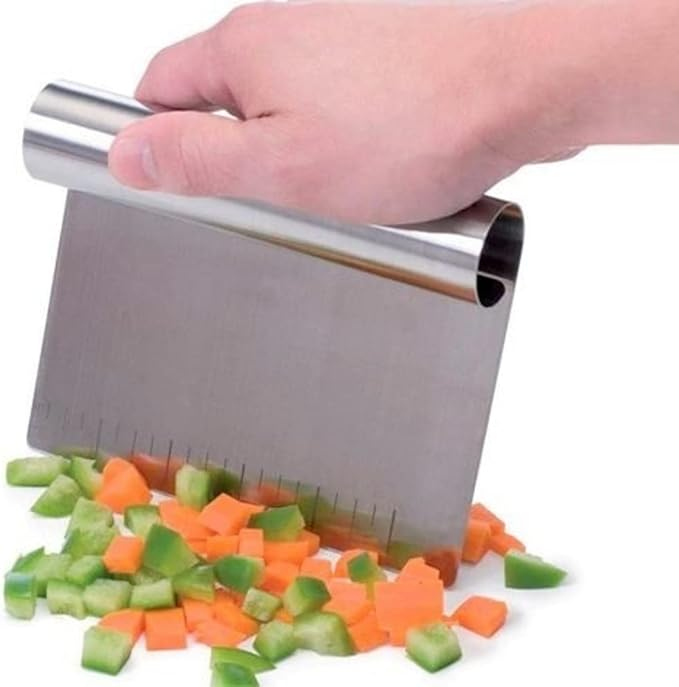

COMER BEM
Seu Blog de Gastronomia
Home
Receitas Salgadas
Receitas Doces
Eventos
Achadinhos
Contato
Achadinhos
Aqui você encontra links para adquirir utensílios de cozinha que recomendamos.

Tramontina JOGO FACAS INOX 4PC

Jogo De Utensílios Resistente ao Calor Antiaderente Premium

Kit 3 Peneiras em Inox para Coar Sucos e Líquidos

Espátula Prática de Inox